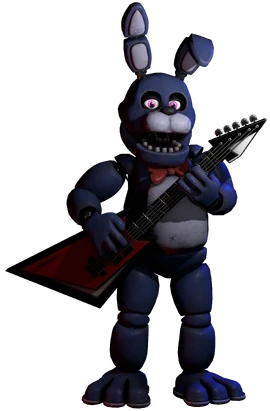
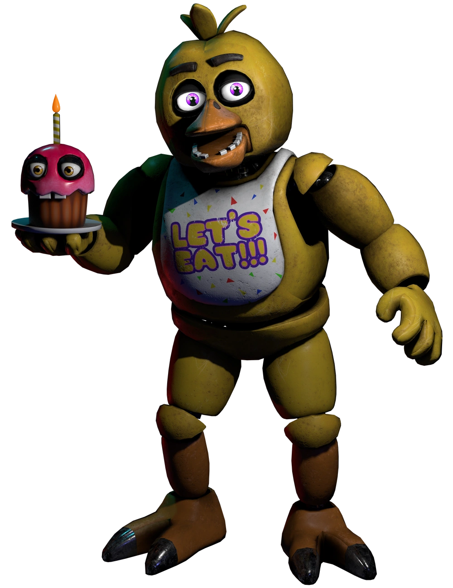

Five Nights at Freddy's Characters
Freddy Fazbear
Possessed By: Gabriel

The Face of the Franchise Freddy Fazbear is the lead animatronic performer at Freddy Fazbear's Pizza. A large, brown bear dressed in a black top hat and bow tie, Freddy is both charismatic and chilling. During the day, he entertains children with his bandmates, but by night, he becomes one of the most dangerous and unpredictable animatronics in the facility. Freddy is known for his unnerving singing voice and his tendency to stalk his prey in the dark.
Bonnie The Bunny
Possessed By: Jeremy
The Eerie Guitarist Bonnie the Bunny is a purple animatronic who plays the guitar in Freddy Fazbear's band. His glowing red eyes and creepy, silent movements make him one of the more terrifying characters in the series. While Bonnie is often seen roaming the pizzeria at night, he is infamous for his swift, unpredictable attacks. Unlike the others, Bonnie's presence is often felt before he's seen, with eerie sounds and sudden movements signaling his approach.
Chica The Chicken
Possessed By: Susie
The Cluckin' Terror Chica the Chicken is an animatronic who specializes in being the kitchen staff of Freddy Fazbear's Pizza. Often seen holding a tray of cupcakes, Chica is a yellow animatronic with a bib that reads "Let's Eat!" She is usually a bit more aggressive than her fellow bandmates, using her sharp beak to attack anyone who dares get too close. Chica is also often seen lurking in the dark corners of the pizzeria, with her unsettling stare and erratic movements
Foxy The Pirate Fox
Possessed By: Fritz

The Wild Card Foxy is a unique animatronic known for his pirate-themed persona. Unlike the other animatronics, Foxy is damaged and more vicious. With a hook for a hand and a tattered appearance, Foxy is quicker and more unpredictable. He is often found in the parts and service room, but when he's active, he can make his way through the pizzeria at terrifying speeds. Foxy's unpredictable nature and loud, metallic scream make him one of the most dangerous threats in the game.